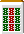
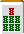
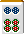
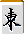
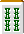
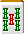
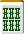
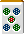

麻将的待（1）
和牌的牌被称为"待"。
麻将有各种各样的待，但基本的只有以下5个，
无论什么多面张都以这5个为基础。
基本的待
形的例子 |
名称 |
待牌 |
待牌的枚数 |
| 单骑待 | 3枚 | ||
 |
边张待 |  |
4枚 |
 |
嵌张待 | 4枚 | |
 |
双碰待（双碰） | 4枚 | |
| 两面听 | 8枚 |
看上面的表，两面听的优点就显现出来了。
单骑待一看是恶形，但手变很多，还有在场上一枚切光的字牌待的话和牌的可能性非常高，可以说是比待牌枚数更有效的待。
双碰待除了双碰，还有"双碰"的称呼。
除此之外，列举实战中常见的待。
一字连和亚两面
形的例子 |
名称 |
待牌 |
待牌的枚数 |
  |
一字连 | 6枚 | |
| 亚两面 | 6枚 |
一字连是2种的单骑待。这个形在制作面子的阶段超一流，但遗憾的是作为待是平凡的6枚待。
亚两面是两面听的一方和雀头一体化的形，比纯两面听待少2张。
例1和一字连不同，可以作为平和来和牌。
（例1）

例2的一字连待，如果不立直的话不能出和牌。
（例2）
另外，亚两面有"可以取为单骑待"的特征。
（例3）

立直摸例3的情况下，如果去掉 的面子的话，变成 单骑，
单骑2符＋门前摸2符＋幺九牌暗刻8符 ＝ 12符
切牌的话是40符的听牌，1300-2600的和牌。
摸的话只能取为两面听， 荣和的话缺少2符，所以是摸限定的高目。
麻将有高点采用原则（以点数最高的方式解释手牌），所以例3的和牌说成"1000·2000"是误报。没有罚款，但要注意。
暗刻复合形
形的例子 |
名称 |
待牌 |
待牌的枚数 |
| 边张单骑 | 7枚 | ||
| 嵌张单骑 | 7枚 | ||
| 两面单骑 | 11枚 |
是在对子（1）中也介绍过的形。
是以暗刻为轴的变则待，哪个使用频率都高。
基本的三面张
有3种待的也是三面张，
首先列举两面听连接2个的基本形。
形的例子 |
待牌 |
待牌的枚数 |
| 11枚 | ||
| 11枚 | ||
| 11枚 |
这3种就全部了。
这些的变化形，也有包含单骑待的三面听。
形的例子 |
待牌 |
待牌的枚数 |
| 9枚 | ||
| 9枚 | ||
| 9枚 |
都是因为自己用了2张所以待的数减少了，
但请注意待本身变成相同的"147"、"258"、"369"。
基本的三面听如果面体重叠的话也难以理解。
（例4） 摸
例4的话切 三面张立直就好，
不要不小心切掉 或 。
高目一盃口的三面张以相当的频率出现，
作为形记住也可能比较好。